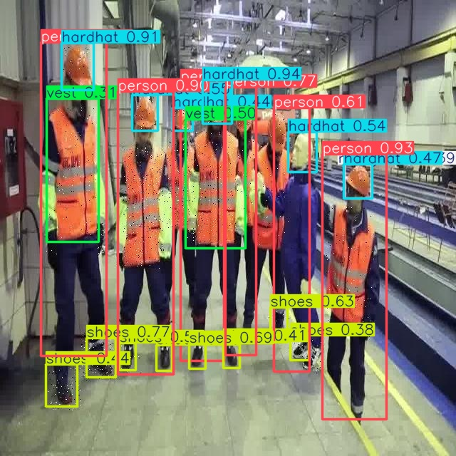

01
Computer Vision / 2025-2026
Hard Hat & Safety Gear Detection
Built an image-processing and object-detection workflow spanning preprocessing, augmentation, YOLOv5/YOLOv8 prototype training, and interactive model comparison through a Streamlit interface.

OBJECT DETECTION / LIVE